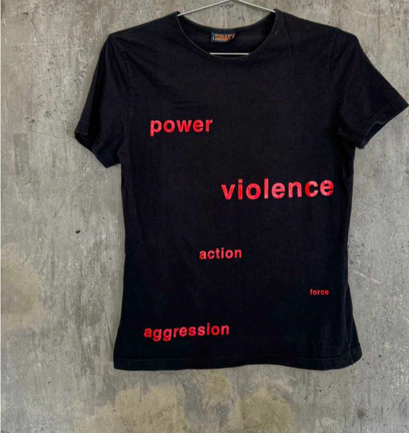
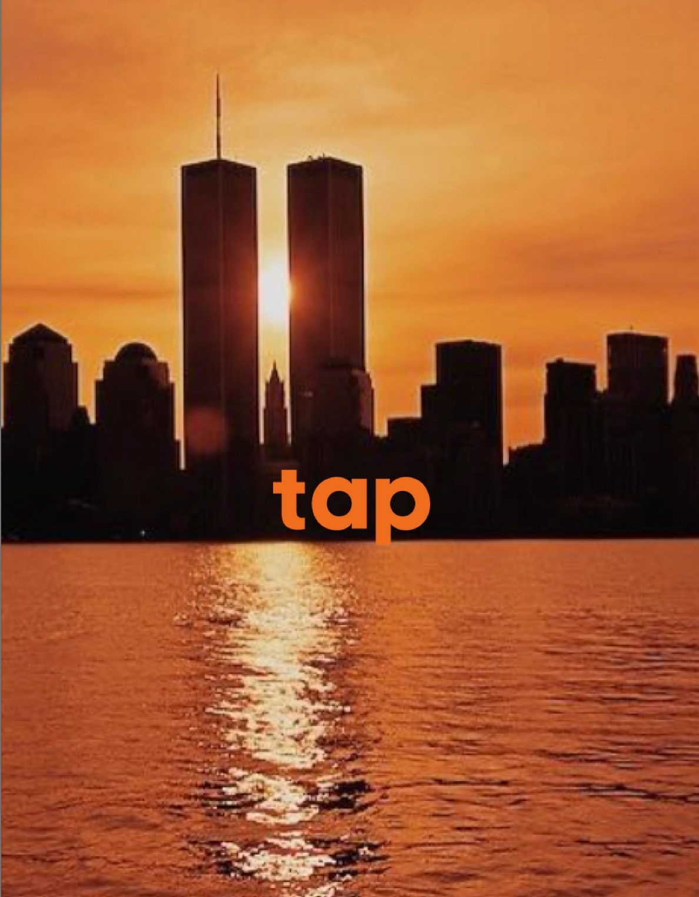
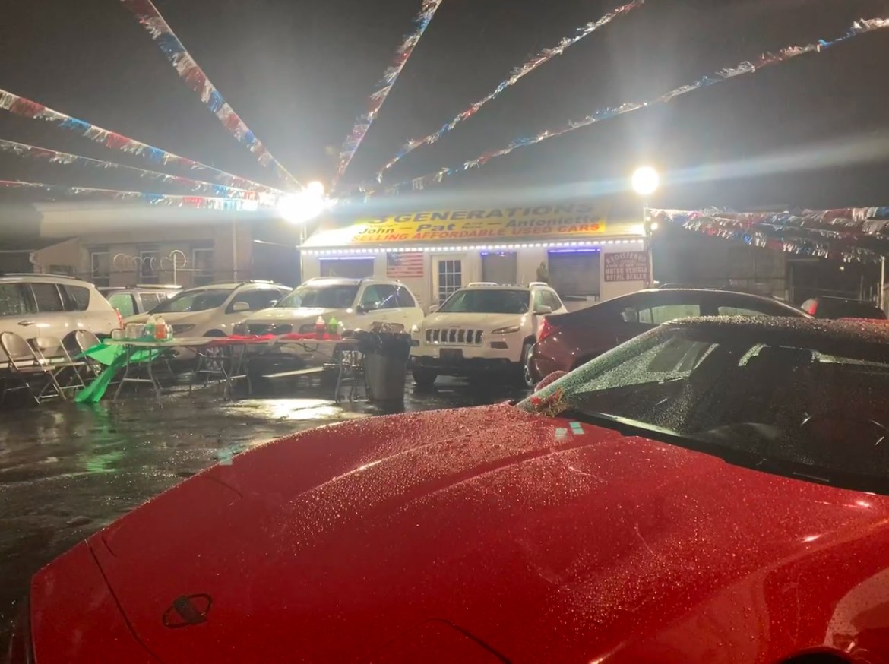
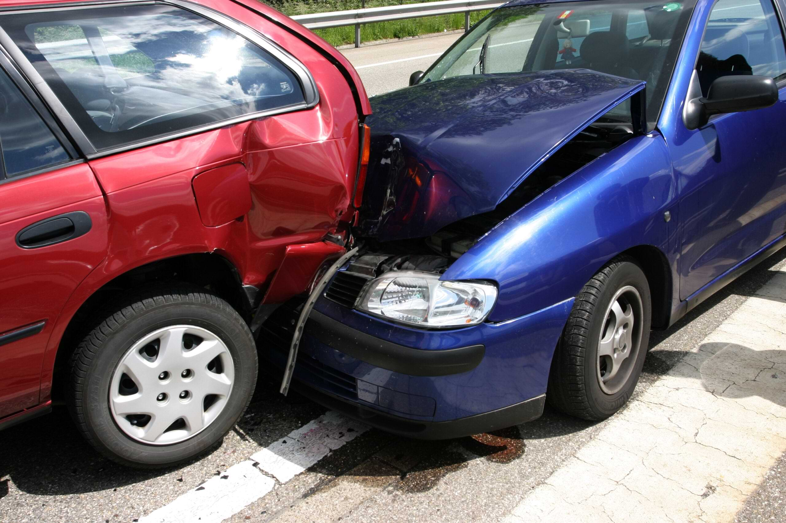
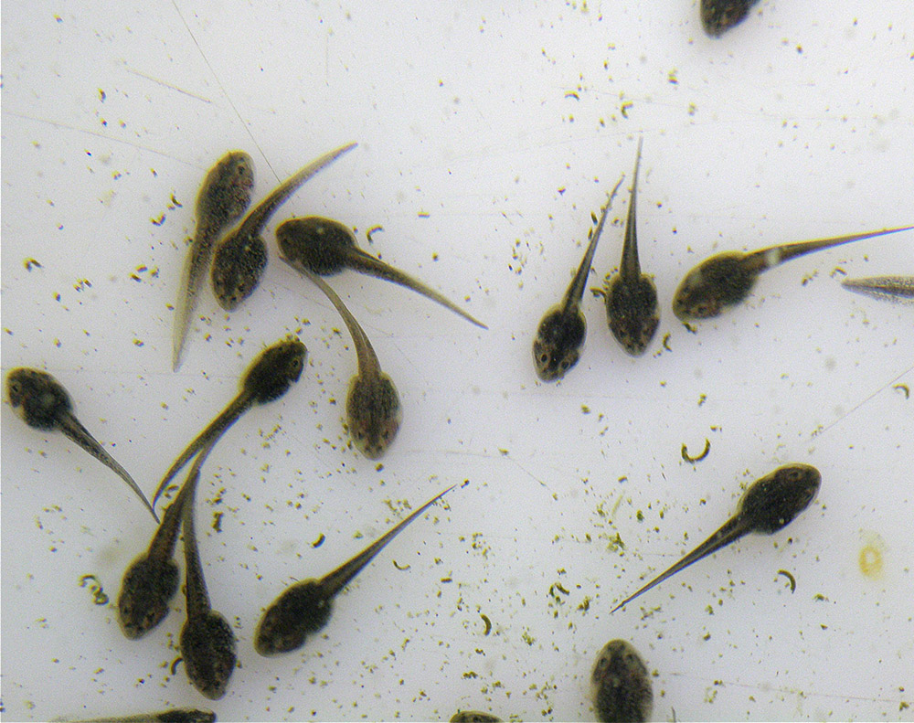
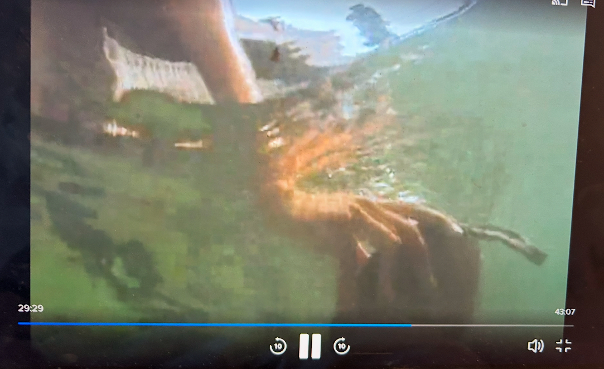
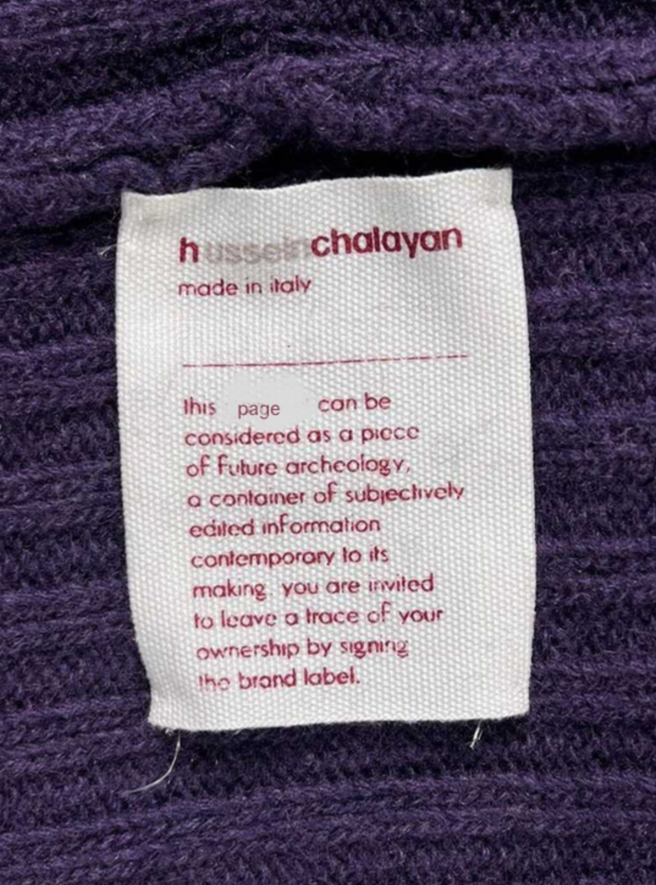

our house

our dog

the sky

you drive

fate strikes

near the pond

I float in the water waiting for you to come fish me out. It's warm, my arm is broken, and I can feel one of the remaining spots of sunlight hovering near my damaged elbow as night falls. This feels too familiar. Not only have I been hit by a car before, but I've also spent the better part of the last decade in some state of anticipation as you walk down the street to meet me and then bend over and put your hand in mine. Happy valentine's day. Let's not get married.

Sign this instead?
